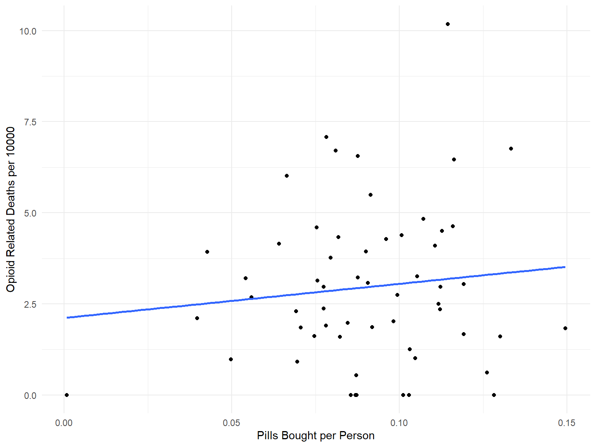

This exploratory analysis clusters opioid related data adjusted for population in each county by the intercepts and slopes. The data was grouped at the county level and regression models were fit for each county. The intercepts and slopes were extracted from these linear models, and grouped according to their magnitude.
Clustering with Pills Bought
In this plot, we can see each line colored as teal, yellow or purple. These colors correspond to medium intercept and high slope, high intercept and low slope, and low intercept and low slope.
Clustering with Opioid Deaths
In this spaghetti plot, we see that the number of opioid related deaths is once again stratified into three groups. One group is counties with a high initial death rate that increased between 2010 and 2012, another representing counties with a medium initial death rate but a decrease or plateau over the three year period. The last group represent counties with a lower initial death rate, and a plateau or increase over the three year period.
Clustering with ER Visits
In this last plot, the clustering identifies three groups based on ER visits over time. Two groups have an average increase in opioid related ER visits between 2010 and 2012, however the one group experienced a higher initial ER visit rate than the other group. The last group experienced a relatively high initial rate of ER visits, but saw a plateau or a decrease in opioid related ER visits over the three year period.
Importance
This clustering information is useful when determining government or public health interventions. Counties which are experience an increase in death rate or ER visits over time may be the first areas officials should target in new policies and treatment programs. Furthermore, any cluster which exhibits a decrease in opioid related events or risk factors might be studied for strategies to support counties which are struggling under the weight of the epidemic.
This scatter plot shows the number of opioid-related deaths per 10000 people versus the number of pills prescribed adjusted by population. A line of best fit was added to the plot. There is a lack of strong correlation between the number of opioid related deaths when controlling for population, and the number of pills bought per person in each county.
